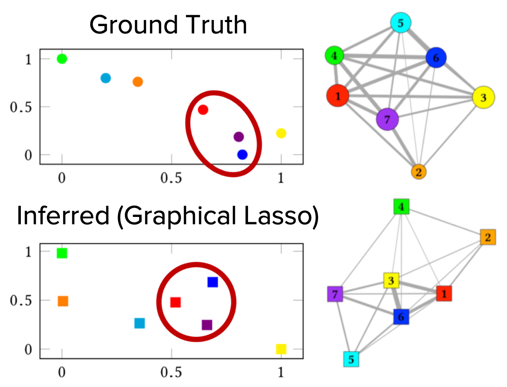

Inferring, analyzing, and optimizing human-building networks
In my PhD thesis work, I use computational tools to study the complex relationship between people and buildings. My goal is to use data from distributed, low-cost sensors to understand and map occupant activity patterns. From these patterns, I hope to learn the key organizational, social, and spatial relationships among occupants, gaining insight into the nature of work in the building. Knowing these patterns of activities and ties among occupants, we can use people-centric design to optimize not only energy efficiency, but also organizational goals such as productivity and collaboration.
Journal Publications
(1) Andrew J. Sonta, Perry E. Simmons, and Rishee K. Jain. Understanding building occupant activities at scale: An integrated knowledge-based and data-driven approach. Advanced Engineering Informatics, 37:1–13, 2018 [GitHub]


Conference Proceedings
